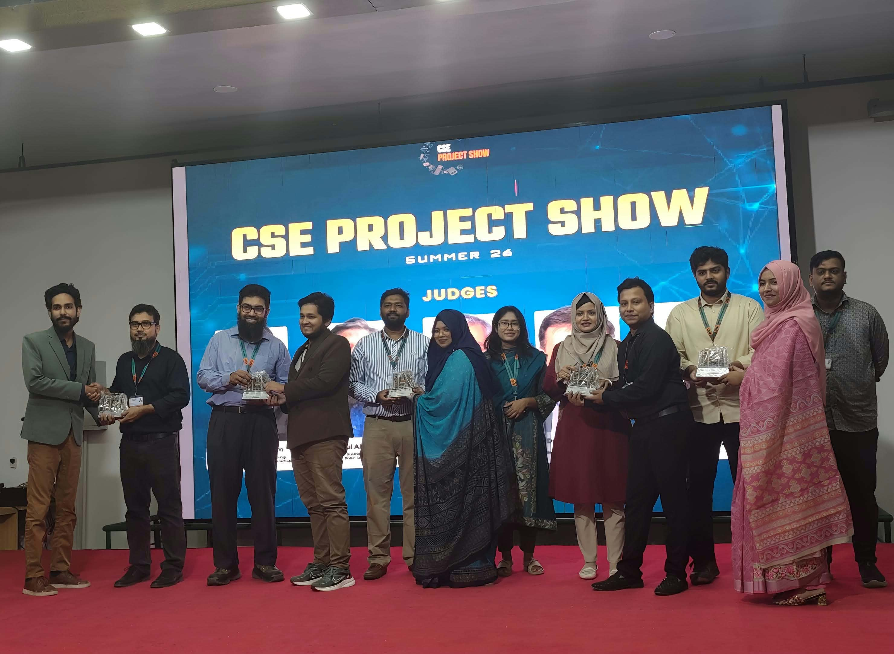
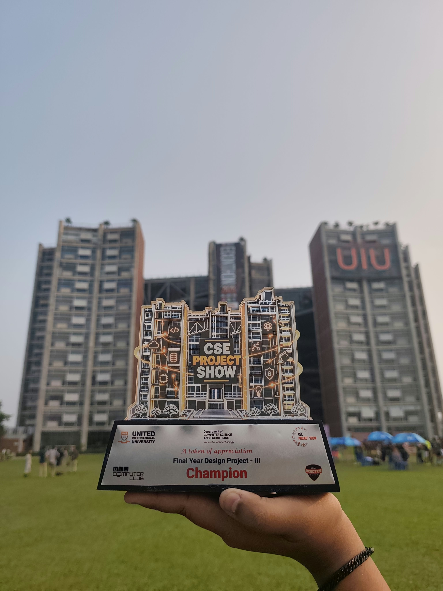
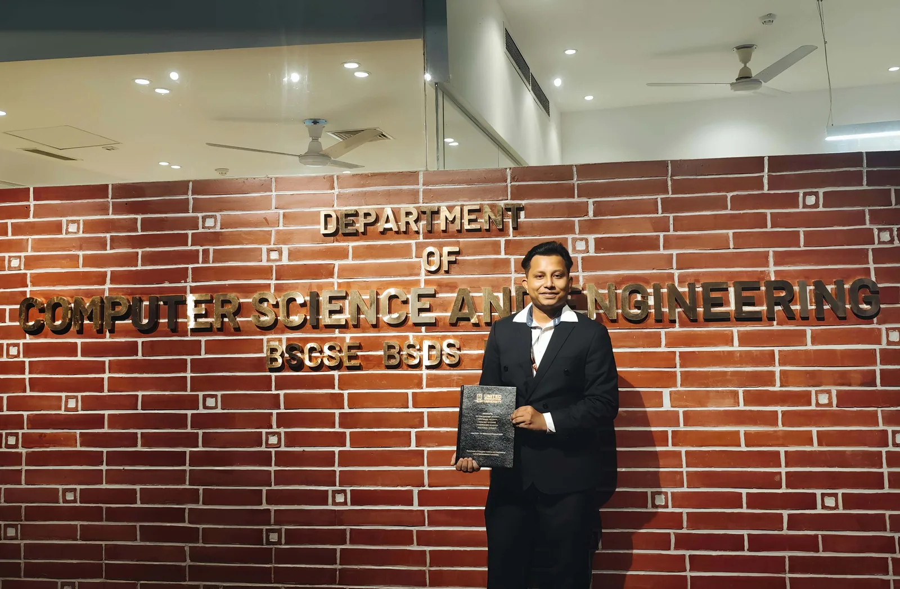
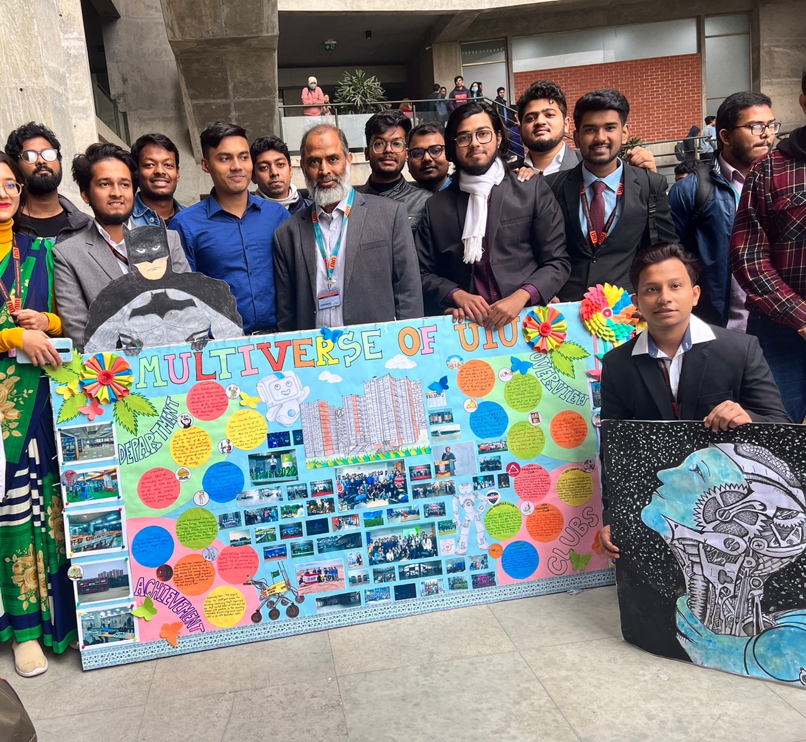
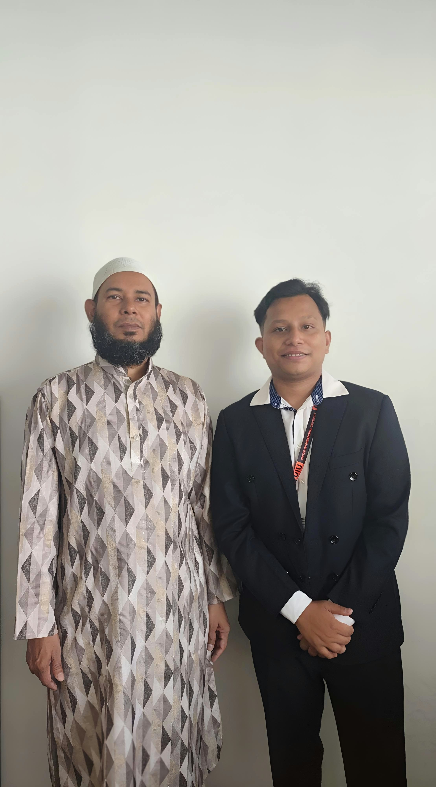
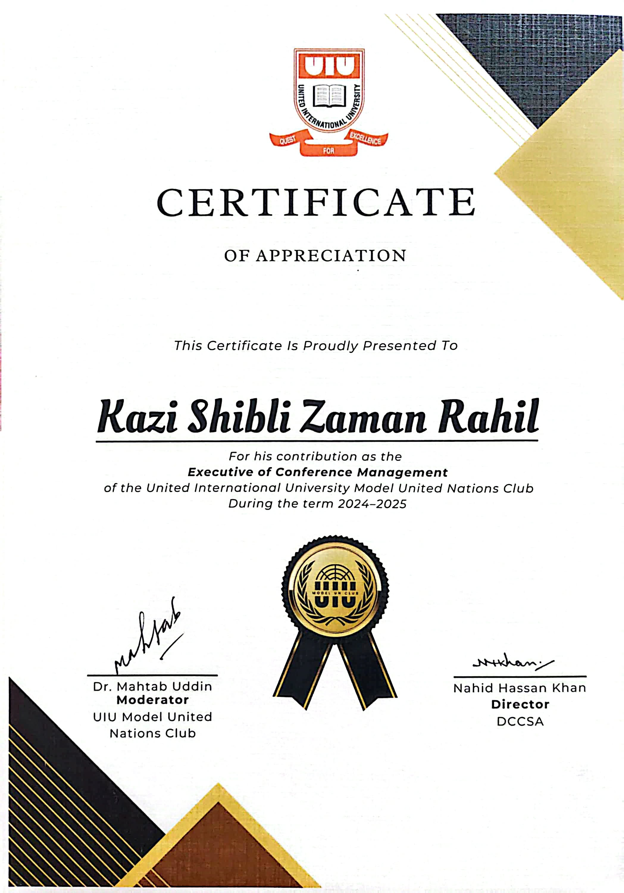

CSE Graduate, United International University
Kazi ShibliZaman Rahil
Full-Stack Developer and Researcher in Data Science and Cybersecurity
I build innovative software and web solutions while exploring research-driven approaches in cybersecurity, data science, data analytics, and intelligent technologies.
About Me
Who I am and what I’m working towards.
A Computer Science and Engineering graduate from United International University, passionate about cybersecurity, data science, software development, and emerging technologies. Experienced in academic research and multidisciplinary projects involving network security, AI, ML, data science, and application development. Driven by continuous learning, analytical problem-solving, and the ambition to develop innovative, secure, and impactful technological solutions.
I am a CSE graduate from UIU with a CGPA of 3.72/4.00, driven by a strong interest in understanding technology, solving complex problems, and transforming ideas into practical solutions. Throughout my academic journey, I have explored various areas of computing, including software engineering, cybersecurity, artificial intelligence, machine learning, data science, computer vision, and embedded systems. These experiences have helped me develop a broad technical foundation while discovering my particular passion for data science, security, especially network & cybersecurity and intelligent security systems.
What I am working towards is building a career at the intersection of cybersecurity, data science, and intelligent computing. I aspire to deepen my expertise in cyber and network security, explore research-driven approaches to emerging security challenges, and contribute to developing reliable, adaptive, and intelligent technological solutions. I am always eager to learn, experiment with new technologies, collaborate with people, and take on challenges that help me grow both professionally and personally.
Now
What I’m focused on right now.
Looking for a full-time or remote role
I’m open to full-time opportunities, internships, including remote positions, where I can work on data analytics, software engineering and intelligent systems.
- Build a career at the intersection of cybersecurity, data science and software engineering
- Deepen my expertise in data science and security
- Contribute to reliable, adaptive and intelligent technological solutions
Active research
The research directions I’m currently working on.
AI-driven zero-trust security frameworkNetwork & Cybersecurity · Artificial Intelligence · Machine Learning Entropy-guided K-medoids clusteringData Mining · Machine Learning An intelligent hybrid-ensemble malware detection systemMachine Learning · CybersecurityEducation
A journey of continuous learning and achievement, from my school years through university - with milestones reached and ambitions still ahead.
B.Sc. in Computer Science & Engineering
2022 – 2026United International University, United City, Dhaka
CGPA 3.72 / 4.00Higher Secondary Certificate, Science
2020Dania College, Dhaka
GPA 5.00 / 5.00Secondary School Certificate, Science
2018Bright School and College, Dhaka
GPA 5.00 / 5.00Junior School Certificate, JSC
2015Bright School and College, Dhaka
GPA 5.00 / 5.00Primary School Certificate, PSC
2012Dhaka Collegiate School, Dhaka
GPA 5.00 / 5.00Technical Skills
Languages, frameworks and tools I use frequently.
Projects
Software platforms and hardware systems I’ve built. Open any project for the full story.
Drag, swipe or use the arrow keys to browse.
Research
Work in data science, security, artificial intelligence, machine learning and data mining. Open any paper for the details.
Awards, Achievements & Activities
Recognition, clubs and moments from university life.
Champions Trophy
CSE Project Show 262, FYDP 3. Team Leader of Catalyst 505, recognised for the FYDP 3 poster presentation and full research demonstration.
Champions
CSE Poster Show 223, Life Skills for Success. Team Leader and Class Representative, recognised for the poster presentation.
University clubs
Member of the UIU Model United Nations Club, the UIU Robotics Club and the UIU Computer Club.
Community and leadership
Earlier involvement in public speaking, school events, scouting and community volunteering, plus team leadership in project and poster shows.






Let’s work together
Open to full-time and remote roles, research collaboration and new challenges.
iamksrahil03@gmail.com